12°-Dangerous — Michael Jackson (1991)
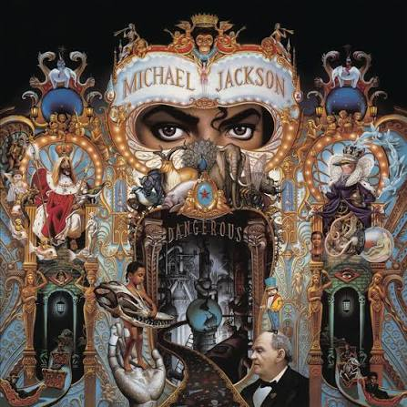
30 milhões de copias vendidas
11°-The Wall — Pink Floyd (1979)
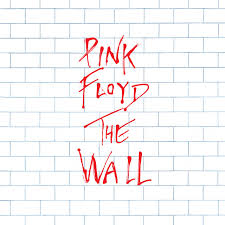
32 milhões de copias vendidas
10°-Gold: Greatest Hits — ABBA (1992)
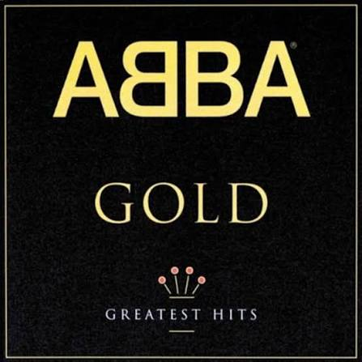
32 milhões de copias vendidas
9°- Saturday Night Fever (Trilha Sonora) — Bee Gees / Vários (1977)
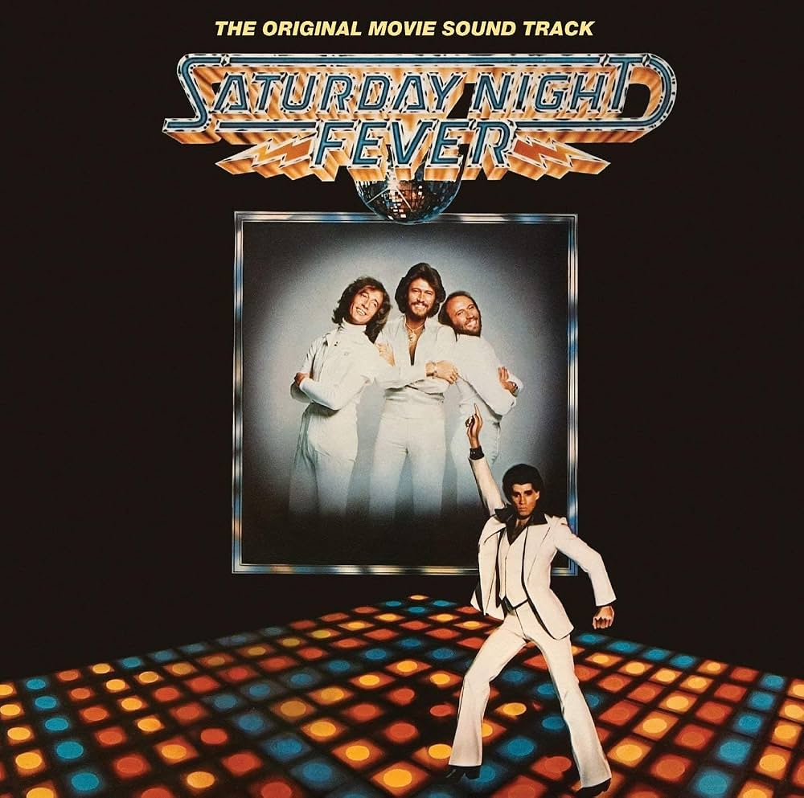
40 milhões de copias vendidas
8°- Rumours — Fleetwood Mac (1977)
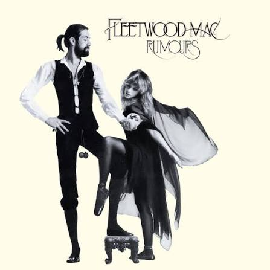
40 milhões de copias vendidas
7°- Come On Over — Shania Twain (1997)
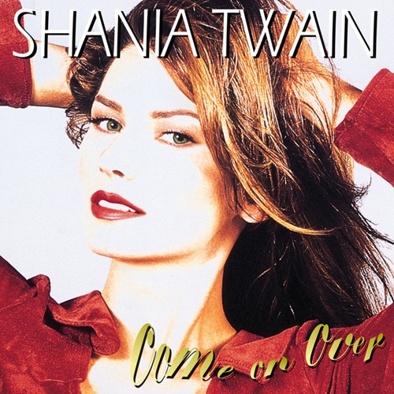
40 milhões de copias vendidas
6°- Bodyguard (Trilha Sonora) — Whitney Houston (1992)
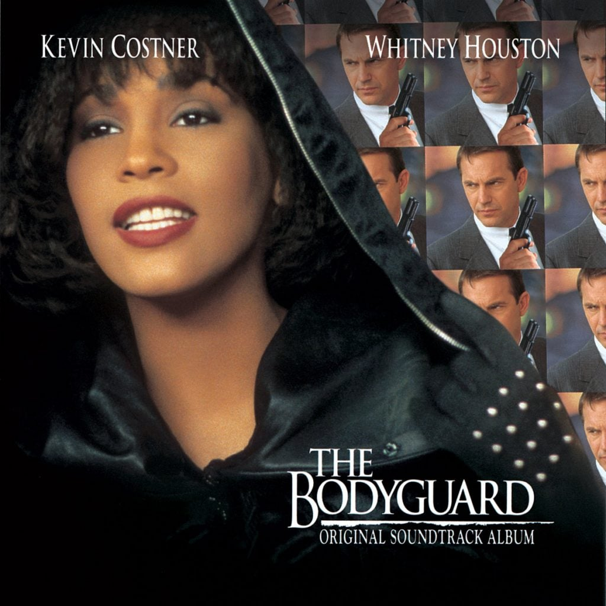
40 milhões de copias vendidas
5°- Bat Out of Hell — Meat Loaf (1977)
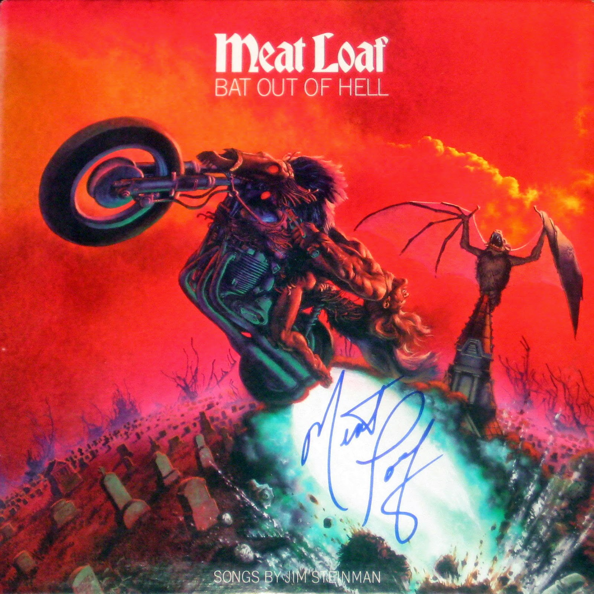
40 milhões de copias vendidas
4°- Their Greatest Hits (1971–1975) — Eagles (1976)
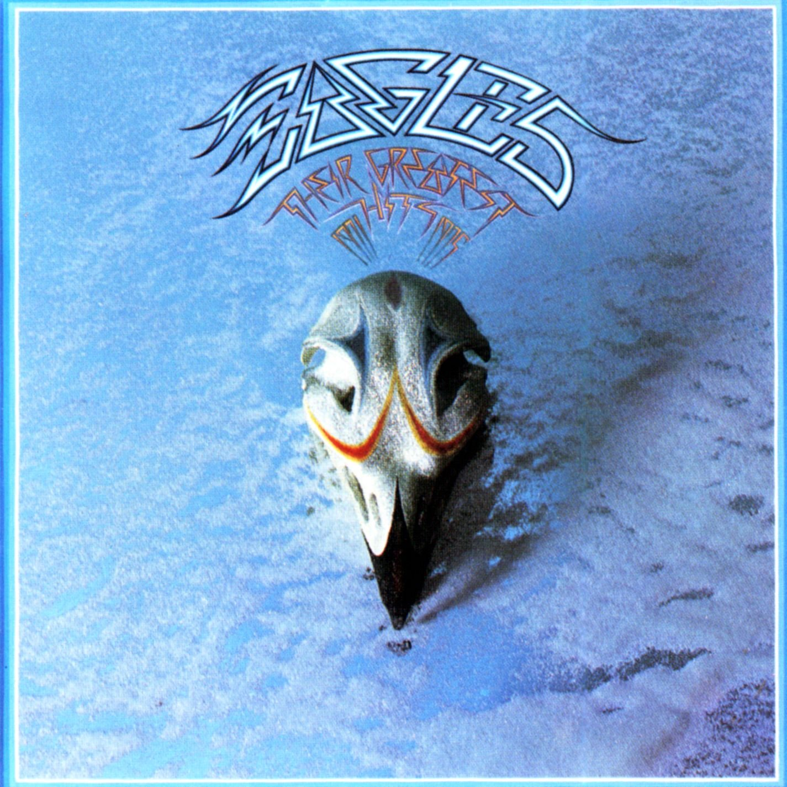
47 milhões de copias vendidas
3°- Back in Black — AC/DC (1980)
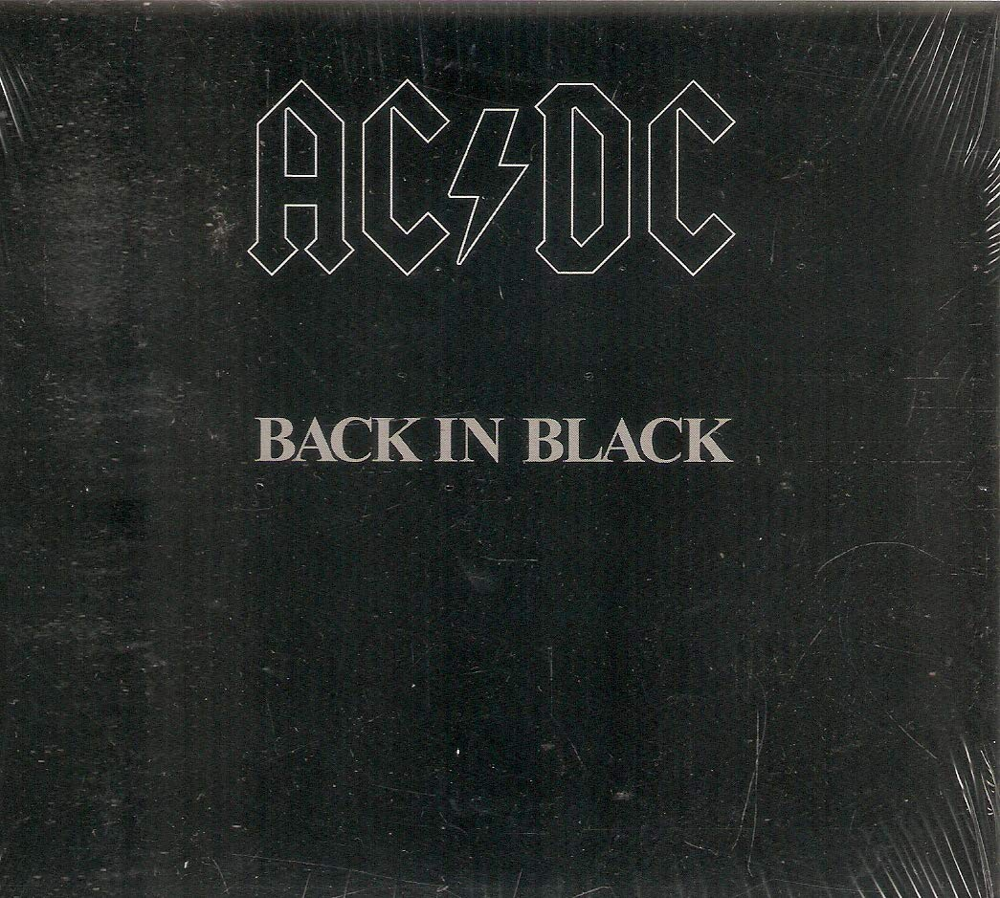
50 milhões de copias vendidas
2°- The Dark Side of the Moon — Pink Floyd (1973)
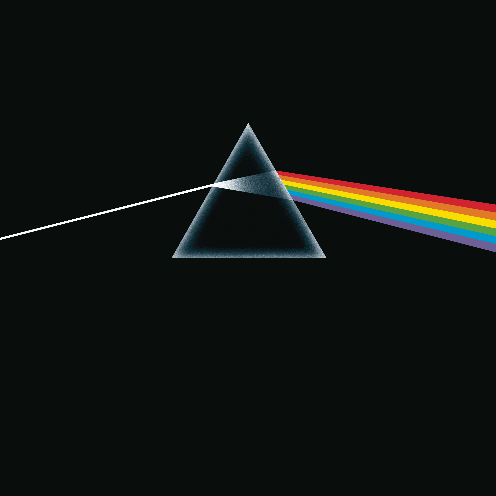
50 milhões de copias vendidas
1°- Thriller — Michael Jackson (1982)
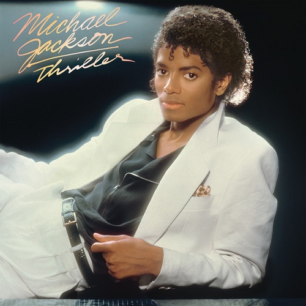
70 milhões de copias vendidas